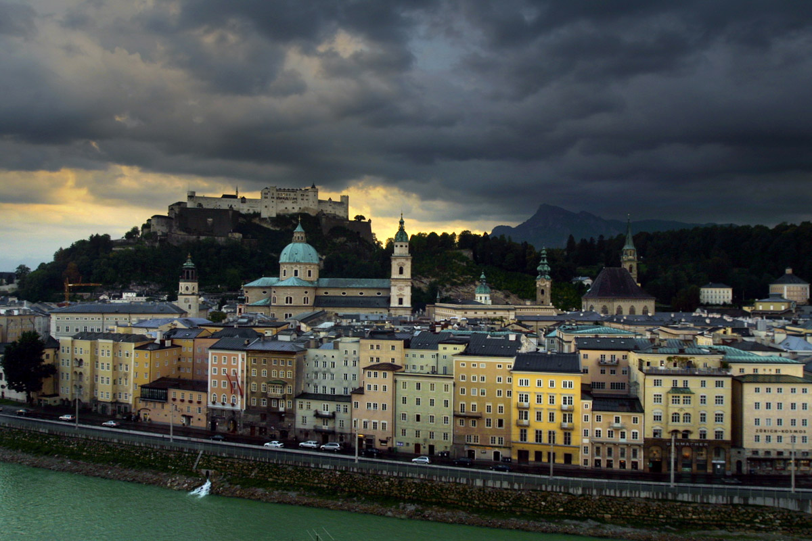
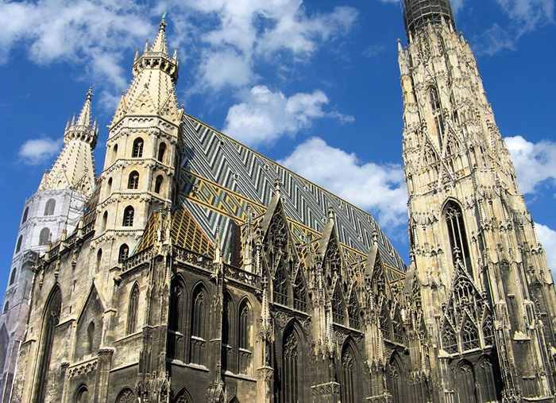
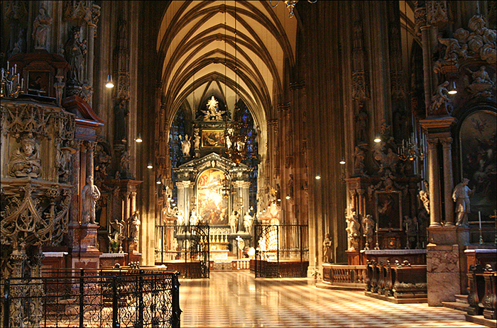

АРХІТЕКТУРА
СВЯЩЕНОЇ РИМСЬКОЇ ІМПЕРІЇ
Австрія славиться своїми замками, палацами та цвинтарями, серед інших архітектурних споруд. До знаменитих замків Австрії відносяться Хоензальцбург Хоенверфен, замок Ліхтенштейн та Schloß Artstetten. Багато замків в Австрії було створено під час правління Габсбургів.
Історичні центри міст Зальцбург і Грац були внесені до списку Всесвітньої спадщини ЮНЕСКО. А в 2001 році історичний центр Відня був також внесен в список Всесвітньої спадщини.

Зальцбург.

Stift Melk. Stift Melk - є бенедиктинським абатством в федеральній землі Нижня Австрія, з видом на Дунай, як він проходить через долину Вахау. Абатство було створено у 1089 році на скалі над містом Мельк.

Собор Святого Стефана в Відні.

Собор Святого Стефана в Відні: інтер'єр.